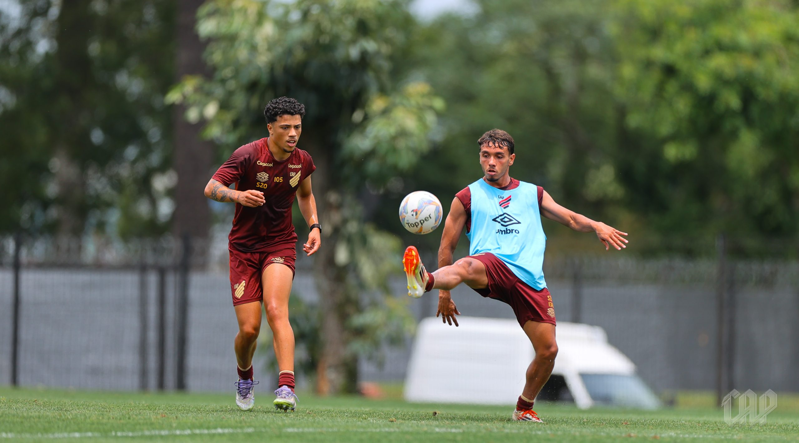
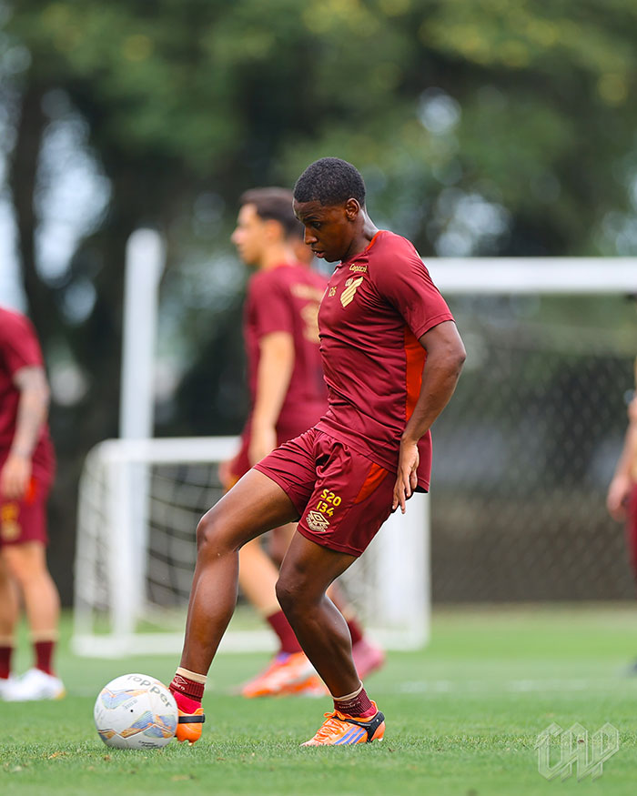
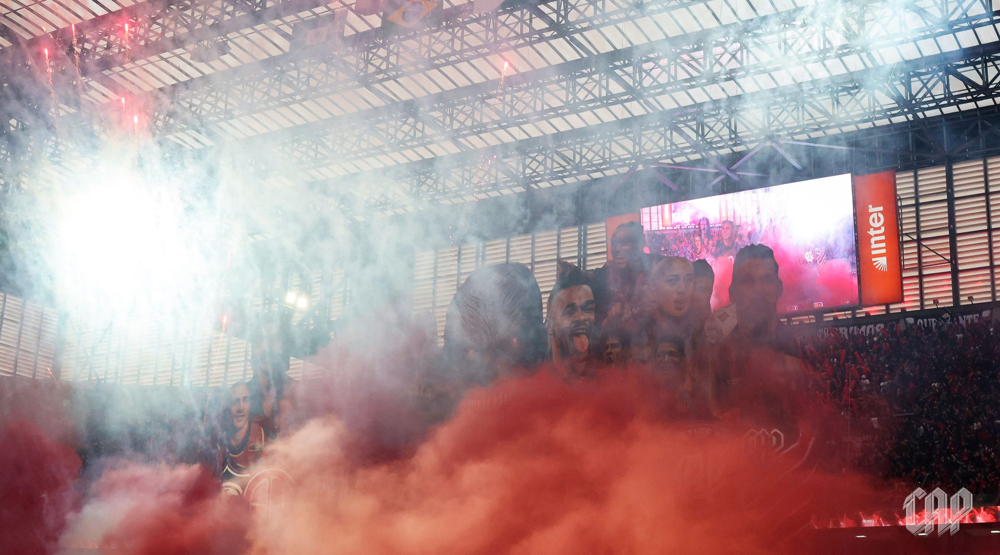
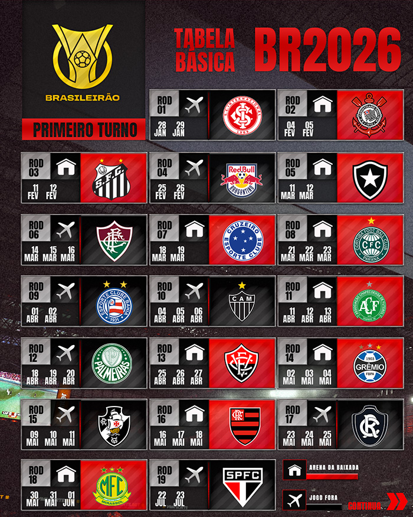
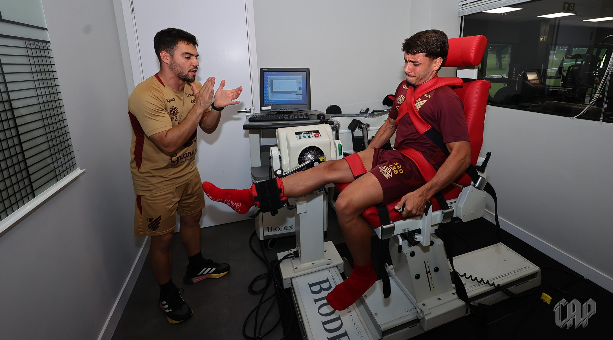
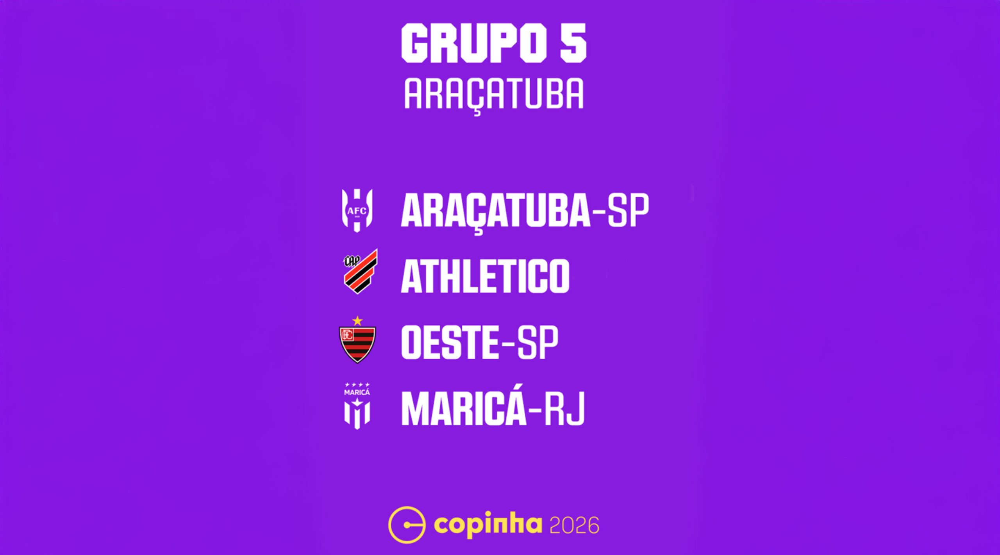
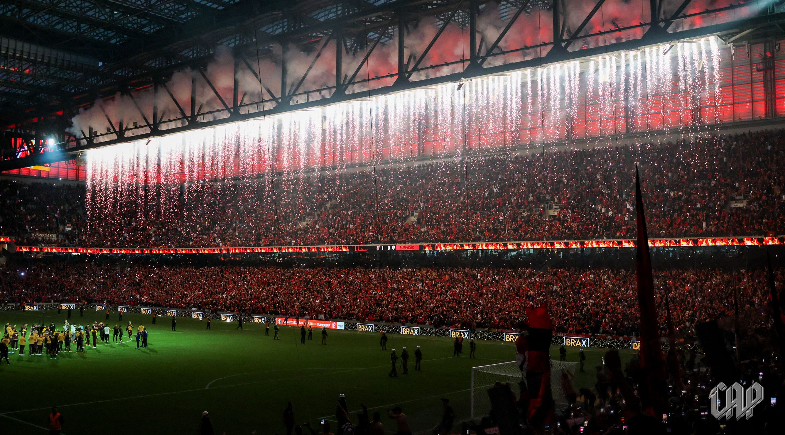
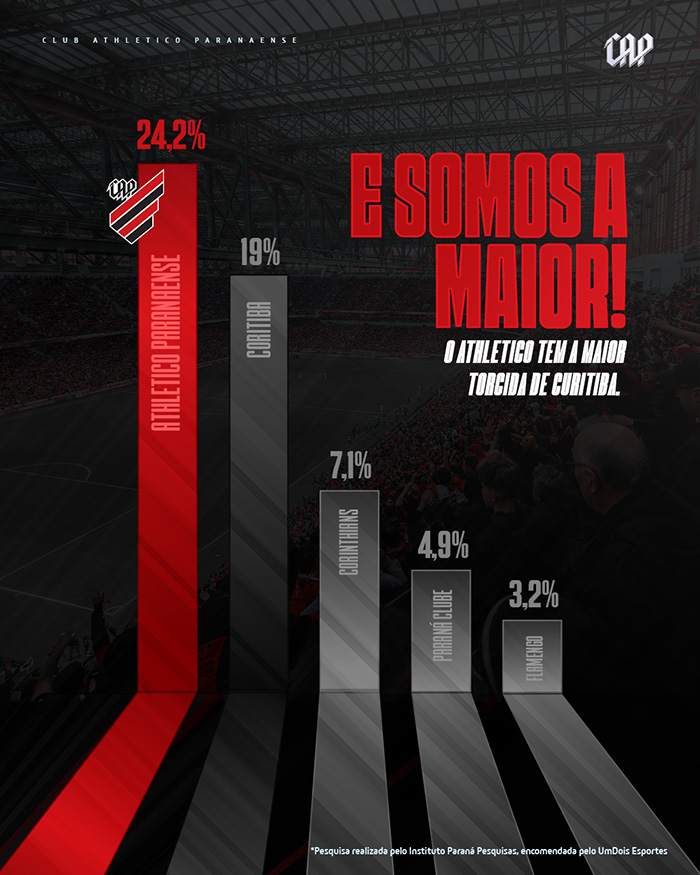

Últimas Notícias
Últimas Notícias

Últimas Notícias do Furacão
Segundo dia de pré-temporada do grupo de Aspirantes
Nesta terça-feira (16), o elenco de Aspirantes do Rubro-Negro realizou o segundo dia de pré-temporada no CAT Caju. A programação incluiu novas avaliações e as primeiras atividades no gramado.
A estreia no Campeonato Paranaense está marcada para o dia 8 de janeiro (quinta-feira), às 20h30, diante do Andraus, como visitante.
Os jogadores rubro-negros se apresentaram às 7h30 no CAT Caju. Antes dos trabalhos no campo, eles realizaram exames de sangue e atividades com as equipes de nutrição, fisioterapia e preparação física.
Em seguida, todos foram ao gramado, onde a comissão técnica da categoria Sub-20 orientou um treino tático. Até sábado (20), estão marcados mais três treinamentos, todos no período da manhã.
O Athletico está no Grupo A do Campeonato Estadual e terá pela frente as equipes do Grupo B na primeira fase. No total, serão seis partidas.
Os quatro melhores de cada chave avançam às quartas de final. O mata-mata será disputado em jogos de ida e volta.
As finais do Paranaense 2026 estão previstas para os fins de semana dos dia 1º e 10 de março.
Furacão enfrenta o Internacional na estreia do Brasileirão 2026
A tabela básica do Campeonato Brasileiro 2026 foi divulgada na noite da última segunda-feira (15) pela Confederação Brasileira de Futebol (CBF). O documento revelou a ordem dos confrontos do Furacão no torneio.
O Rubro-Negro encara o Internacional na estreia. O duelo será fora de casa, no dia 28/01 (quarta) ou 29/01 (quinta).
A primeira partida em casa será diante do Corinthians, no dia 04/02 (quarta) ou 05/02 (quinta).
Os quatro primeiros colocados do Brasileirão 2026 garantem vaga na fase de grupos da CONMEBOL Libertadores de 2027. O quinto na tabela conquista um lugar na fase preliminar da CONMEBOL Libertadores de 2027.
TABELA BÁSICA DO ATHLETICO NO BRASILEIRÃO 2026
Com início em Janeiro, e com pausa pra copa do mundo no início de junho, essas são as data base e enfrentamentos do Furacão no 1° turno. No 2° turno os mandos se invertem.
Início dos trabalhos para o Paranaense 2026!
A preparação para o início da disputa do Campeonato Estadual 2026 começou na manhã desta segunda-feira (15).
Vinte e um jogadores se reapresentaram no CAT Caju. Eles serão comandados pela comissão técnica da categoria Sub-20
Seis jogadores do elenco principal reforçarão o grupo de Aspirantes nos jogos do Paranaense 2026: o goleiro Mycael, os zagueiros Belezi e Habraão, os meias Dudu Kogitzki e João Cruz, e o atacante Renan Peixoto. Eles se reapresentarão no CAT Caju após as férias.
Datas e horários: Tabela detalhada da Copinha 2026 é definida
A Federação Paulista de Futebol divulgou, no último sábado (13), as datas e os horários dos jogos do Rubro-Negro na primeira fase da Copa São Paulo de Futebol Júnior 2026.
A estreia do Furacão será no dia 3 de janeiro (sábado), às 21h30, contra o Oeste (SP).
No dia 6 (terça), às 21h, a piazada do Caju encara o Maricá (RJ). Já no dia 9 (sexta), o duelo é diante do Araçatuba, às 21h.
Todos os jogos serão realizados em Araçatuba (SP), sede do Grupo 5 da Copinha 2026.
Pesquisa reafirma hegemonia rubro-negra em Curitiba
Sem surpresas. A maior torcida de Curitiba é rubro-negra!
A hegemonia da torcida athleticana na capital paranaense foi confirmada em um levantamento do Paraná Pesquisas, encomendado pelo UmDois Esportes, divulgado nesta segunda-feira (8). O Furacão conta com a preferência de 24,2% dos moradores, reafirmando o primeiro lugar de pesquisas anteriores.
MAIORES TORCIDAS DE CURITIBA
1° Athletico: 24,2%
2° Coritiba: 19%
3° Corinthians: 7,1%
4° Paraná Clube: 4,9%
5° Flamengo: 3,2%
5° Palmeiras: 3,2%
A pesquisa foi feita entre setembro de 2024 e novembro de 2025, com 8.392 habitantes. O grau de confiança é de 95%. Já a margem de erro é de 1,1%.